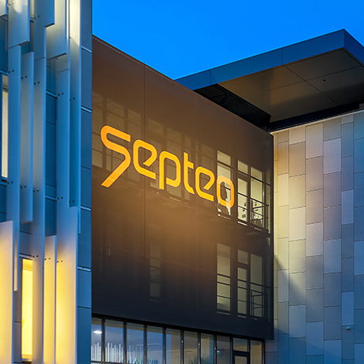

Mémoire de fin d’études
L’automatisation financière sous Kubernetes.
Ce mémoire analyse la pertinence de l’automatisation du calcul des coûts d’infrastructure dans un environnement Kubernetes et propose une mise en œuvre concrète chez Septeo. L’objectif est de produire des coûts fiables, comparables et traçables à partir d’un système d’information hétérogène, afin d’améliorer le pilotage financier de l’infrastructure.
